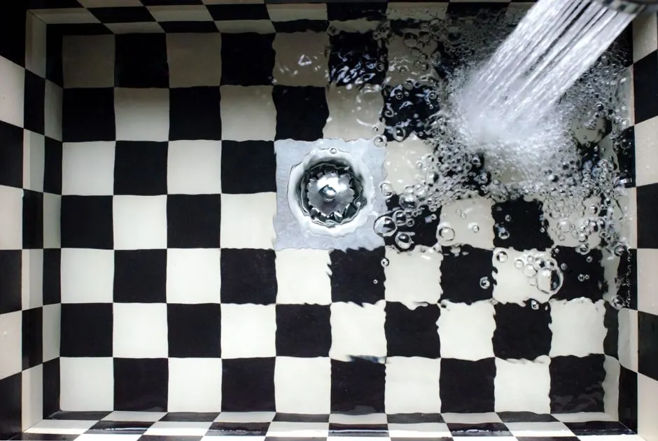
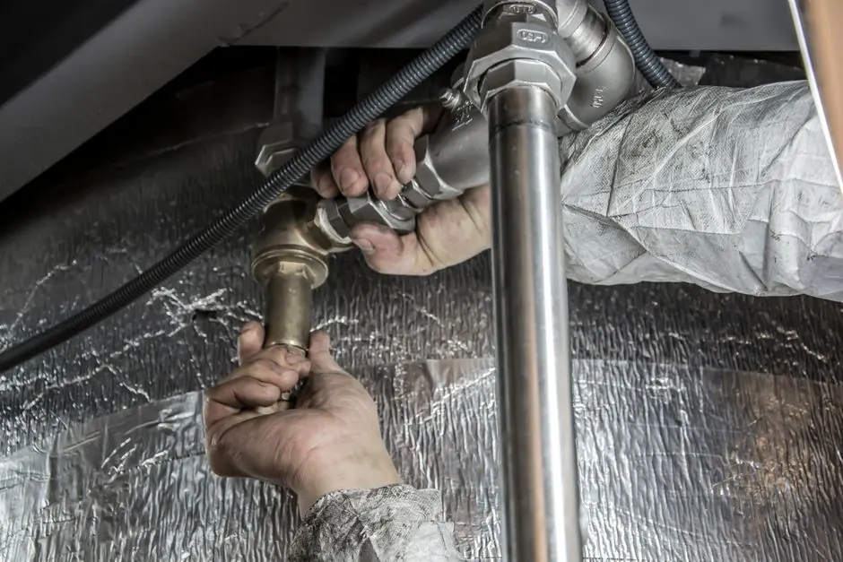
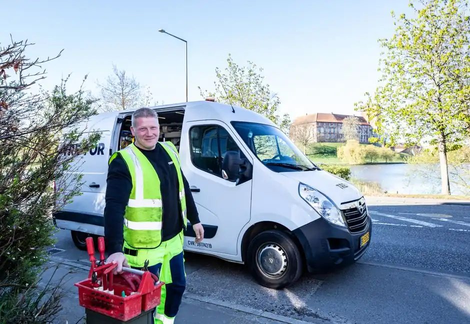

Drain Cleaning in Park Shore & The Moorings, FL
Serving Venetian Bay waterfront homes, Moorings golf course estates, and Gulf Shore Boulevard towers with dedicated drain cleaning. From clearing sand and grease build-up in coastal sewer laterals to rapid emergency fixture unclogging, Drain Cleaning Advisor provides clean, certified plumbing solutions.
60-90 Min ArrivalZIP Code 34103Canal & Beachfront Certified
Expert Drain Care for Park Shore & The Moorings
Park Shore and The Moorings feature some of Naples' finest bayfront and canal access properties. Because the ground water table fluctuates with tides in Venetian Bay and the Gulf of Mexico, underground sewer lateral lines are vulnerable to fine sand infiltration, joint shifting, and dense root intrusion from mature palm canopies.
Our technicians use commercial hydro jetting equipment and precision mainline drain cleaning to clear stubborn obstructions cleanly without tearing up your lawn or canal landscaping.
Explore our 34103 drain services
34103 Dedicated Service UnitsWe understand the structural layout of Moorings mid-century ranch conversions and Park Shore high-rise condominiums.
Drain Cleaning Services in Park Shore & The Moorings
We provide full-spectrum residential and commercial drainage solutions for waterfront villas, condos, and estates.
01
Sewer Mainline Cleaning
Camera inspection and mechanical root clearing to keep main residential sewer lateral lines flowing smoothly to city connections.
02Hydro Jetting Pipe Descaling
Blast away hardened grease, sand, and mineral scale from condo stacks and long-run residential pipes.
03Emergency Clog Removal
Fast unclogging for kitchen sinks, luxury master showers, garbage disposals, and laundry lines.
04Drain Line Leak Detection
Locate hidden drain pipe leaks beneath foundation slabs and canal-adjacent patios to prevent water damage.
Common Drainage Challenges in 34103
Specialized expertise in solving coastal water table and landscaping drainage complications.
Canal-Side Pipe Settlement
Tidal movement can cause minor shifts in soil along seawalls, stressing pipe junctions. How we help: We use HD video cameras to verify line slope and joint alignment before performing targeted jetting.
Sand & Silt Intrusion
Coastal storms and high winds often drive fine sand into patio cleanouts and yard drains. How we help: Our ground drain cleaning flushes out sediment and restores rapid surface runoff.
Grease in Venetian Village Commercial Lines
Retail and dining venues require high-frequency grease trap and branch line clearing. How we help: We provide scheduled off-hours jetting that prevents backups without interrupting patrons.
Signs You Need Immediate Drain Cleaning
Catch plumbing clogs before they cause costly wastewater backups into living areas.
Slow Draining Master Showers
Standing water in shower pans points to hair and soap accumulation in the P-trap or branch line.
Gurgling Kitchen Sinks
Air bubbles rising when running water indicate that cooking grease is choking the horizontal run.
Outdoor Cleanout Overflowing
Water pooling near exterior PVC cleanout caps proves a downstream blockage in the main lateral.
Unpleasant Drain Smells
Rotten odors in bathrooms or kitchens indicate organic matter decay inside unvented or clogged pipes.
Key Landmarks Across Park Shore & The Moorings
Our service vehicles navigate all corridors throughout ZIP code 34103 daily.
The Village on Venetian Bay
Servicing waterfront retail shops, dining venues, and nearby canal residences.
Moorings Golf & Country Club
Providing drain snaking and sewer cleaning for residences framing the fairway loops.
Gulf Shore Boulevard North
Handling multi-story condominium waste stacks and luxury beachfront residential towers.
Clam Pass Park Corridor
Clearing residential drainage systems near the coastal preserve and mangrove waterways.
Covering All Park Shore & The Moorings Neighborhoods
We serve all residences and businesses between Mooring Line Drive, Crayton Road, Park Shore Drive, and US-41.
Surrounding Communities: Pelican Bay · Old Naples · North Naples · Coquina Sands
Check My Street →
1234
Primary 34103 Dispatch HubRapid response for Venetian Bay canal residences and beachfront towers.
Park Shore & The Moorings FAQ
Our experienced Naples dispatchers are ready to answer your questions 24 hours a day.
Call +12396880557How do Venetian Bay and canal waterways affect sewer pipes?
Waterfront properties often experience subtle ground shifting and high tidal tables that can stress underground joints, allowing silt and root filaments into drain lines. We hydro jet and clear these lines cleanly.
Can you clear clogs in both low-rise villas and Gulf Shore Blvd high-rises?
Yes, our technicians carry equipment tailored for multi-story residential stacks along Gulf Shore Blvd N as well as private single-family canal homes throughout Park Shore and The Moorings.
How quickly can a technician respond in Park Shore & The Moorings?
We offer same-day service and 24/7 emergency dispatch, with technicians typically arriving within 60 to 90 minutes across ZIP code 34103.
Do you provide camera inspections after clearing lines?
Yes, we perform high-definition camera scoping after major clearings to verify that the blockage is 100% eliminated and the pipe walls are intact.
Are your technicians licensed and insured in Florida?
Yes, Drain Cleaning Advisor is a fully licensed and insured plumbing contractor operating across Collier County.
Need Fast Drain Cleaning in Park Shore or The Moorings?
Call Drain Cleaning Advisor now for expert sewer line clearing, drain snaking, and hydro jetting in 34103.

Schedule Drain Cleaning in 34103
Get in touch with our team today. We provide same-day service appointments and 24/7 emergency dispatch in Park Shore and The Moorings.